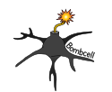

During my PhD I kept building software to solve problems in my own data, and realised other people were hitting the same walls — so I made the tools open-source, documented them properly, and tried to get the word out.
That has grown into something I care about beyond just my own work. I review for the Journal of Open Source Software, I received an honourable mention for the UCL Open Science Award in 2023 and helped organise it the following year, I run workshops on how to build good research software, and I write about it when I can.

Neuropixels probes can record hundreds of neurons at once, but spike sorting — figuring out which spikes belong to which neuron — is messy and the results need quality control. The standard answer has been to check each unit by hand: hours of work per experiment, highly subjective, and nearly impossible to reproduce across labs.
bombcell automates this. It computes quality metrics for every unit and classifies them into single units, multi-units, noise, and non-somatic units. No manual curation needed. It also makes experiments possible that were previously impractical, like tracking neural activity across days while an animal learns a task.
bombcell is available in MATLAB and Python, and we are integrating it into SpikeInterface. Its development was supported by a MathWorks grant, and I teach it every year in the UCL Neuropixels course.
The Allen Mouse Brain Connectivity Atlas maps long-range projections across the entire mouse brain, but pulling and exploring that data programmatically is cumbersome. Brain Street View makes it easy — it lets you query connectivity data from the Allen API in MATLAB and visualise projection pathways between brain regions.